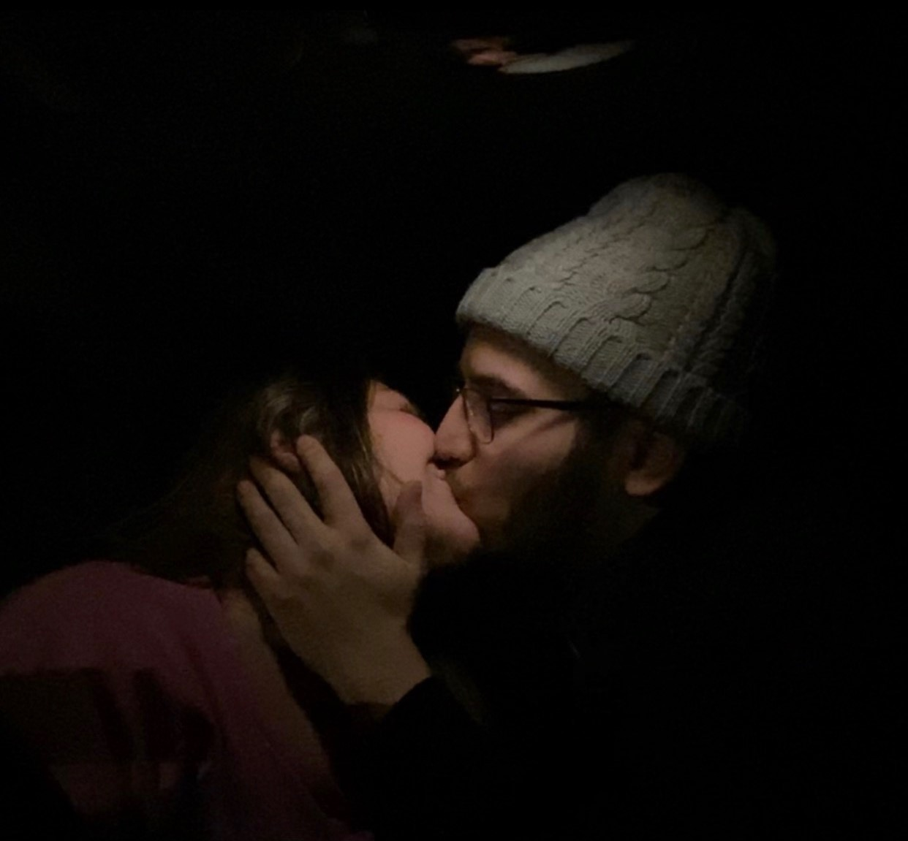
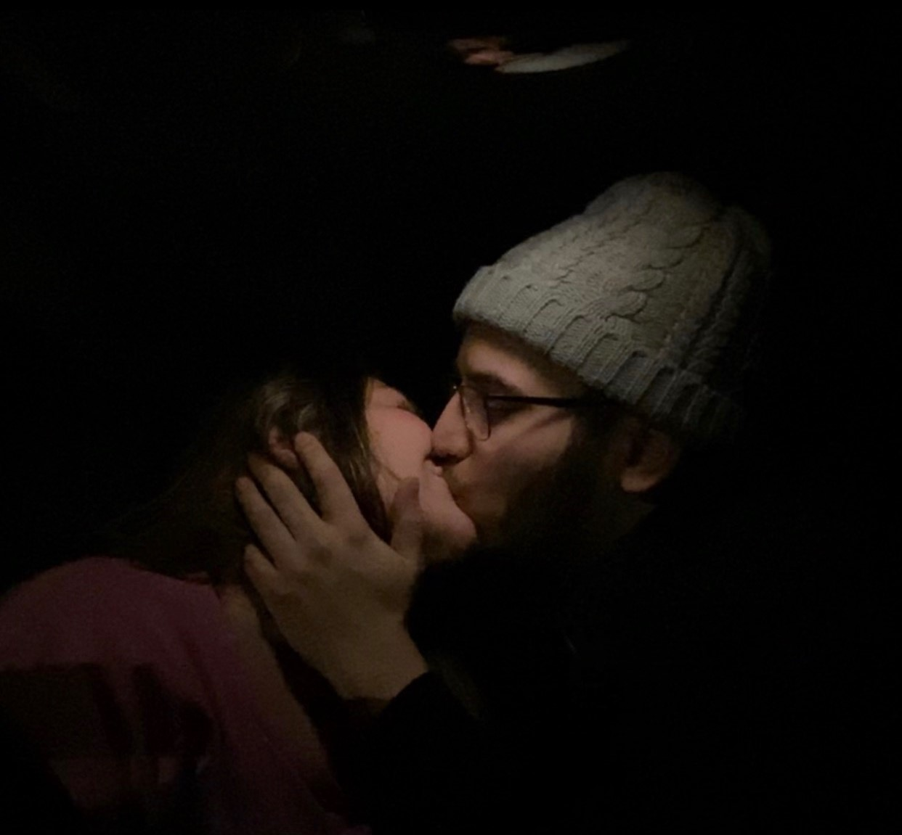
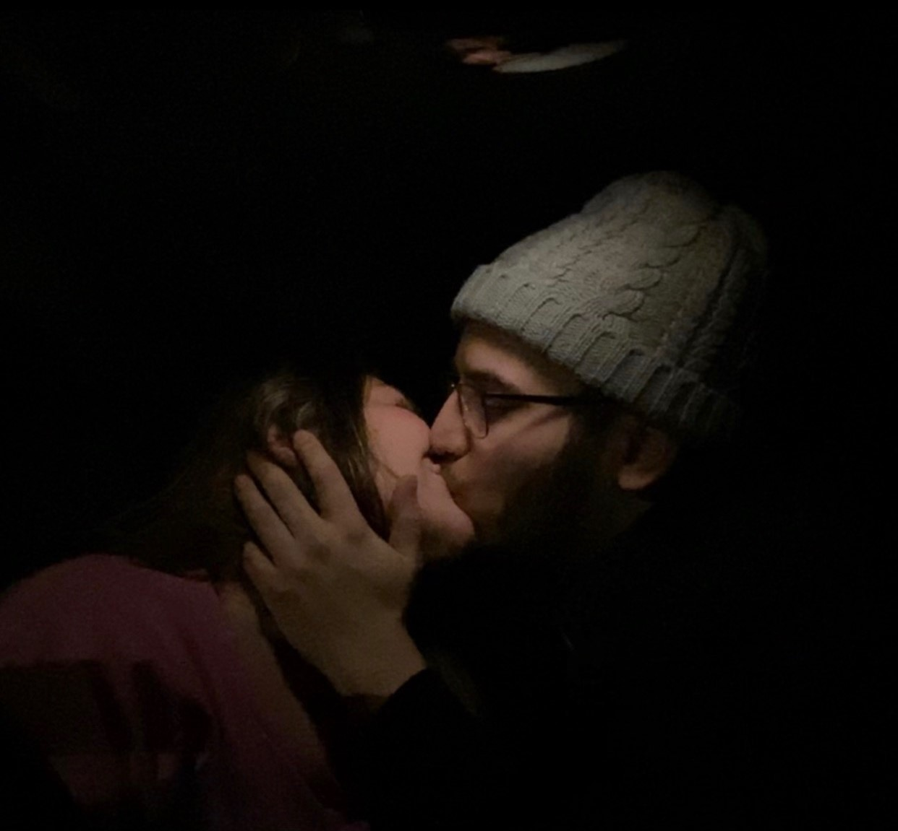

Dear Amy,
I hope this letter finds you well. You found it!
Congratulations! I hope this is useful to you and I hope it provides a good medium for you to explain your issue
while it being something sentimental as well. Unfortunately, this is not a final product, I wanted so much more for
this, but realistically I would be working on it for too long before you can actually start using it. I put this secret
here to kind of vent out so please forgive me on that part. I really miss you. I am not okay. The only time I feel like myself
is when I'm at the gym lifting weights. I still think that we are true soulmates, and I believe that if it is meant to be
it will be. But how do people do this? I feel so empty. I desperately post on social media in the off-chance that you view it.
I have started therapy, and she is telling me that it is not mentally healthy to continue to cling on to something that
I have no control over. But I can't help it you know? You will forever be my person no matter what anyone says. I am tired of asking
myself what is right and what is wrong. Anyway. I hope you are ok. You don't have to let me know you found this if you don't want to.
But, I love you. I love you so much it hurts. It hurts every being in my body not being able to talk and be with you. And I know
you do too. You can leave our server. Block me on everything. And never talk to me again. But, I will always know I will always
have a special place in your heart. I love you sweetheart. Forever and always!
Thank you,
Jafar Moukalled💖
